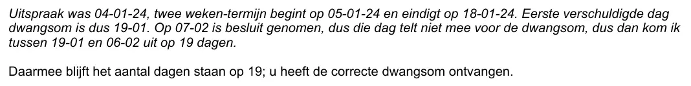

Prueba · Correo electrónico
Defensor del Pueblo de los Países Bajos a Giltay, 28 de febrero de 2024
El pasaje
«La resolución judicial fue el 04-01-24, el plazo de dos semanas empieza el 05-01-24 y termina el 18-01-24. El primer día en que se adeuda la multa coercitiva es, por tanto, el 19-01. El 07-02 se adoptó la decisión, así que ese día no cuenta para la multa coercitiva, por lo que entre el 19-01 y el 06-02 me salen 19 días. Con ello, el número de días se mantiene en 19; usted ha recibido el importe correcto de la multa coercitiva». Página 1, el cálculo del correo electrónico del 28 de febrero de 2024. Traducido del neerlandés; el texto original figura a continuación.
Texto original
“Uitspraak was 04-01-24, twee weken-termijn begint op 05-01-24 en eindigt op 18-01-24. Eerste verschuldigde dag dwangsom is dus 19-01. Op 07-02 is besluit genomen, dus die dag telt niet mee voor de dwangsom, dus dan kom ik tussen 19-01 en 06-02 uit op 19 dagen. Daarmee blijft het aantal dagen staan op 19; u heeft de correcte dwangsom ontvangen.” Los dos párrafos del correo electrónico se han unido aquí.

Por qué importa este documento
El Tribunal de Distrito de La Haya había resuelto que el Defensor del Pueblo de los Países Bajos (Nationale ombudsman) había bloqueado de forma «manifiestamente ilícita» la solicitud de información de Giltay, y en una resolución posterior le había impuesto una multa coercitiva. Cuando Giltay puso en duda el importe pagado, la institución respondió con este correo electrónico. Un empleado había revisado el cálculo, el número de días se mantenía en diecinueve, y a Giltay se le comunicó que había recibido el importe correcto de la multa coercitiva. El Defensor del Pueblo mantuvo esa postura hasta el 11 de junio de 2026, cuando reconoció el error de cálculo.
Procedencia
- Documento
- Correo electrónico, impresión en PDF desde Gmail
- Remitente
- Asuntos Jurídicos, Defensor del Pueblo de los Países Bajos, firmado por Karin Vaalburg, asesora jurídica sénior
- Destinatario
- Edwin Giltay
- Fecha
- 28 de febrero de 2024, 13:39
- Asunto
- «Re: Betaling griffie- en proceskosten zaaknummer SGR 23 / 6997 WOO» (pago de las tasas judiciales y las costas, número de expediente SGR 23 / 6997 WOO)
- Número de expediente
- SGR 23 / 6997 WOO
- Véase también
- Correo electrónico anterior en la misma correspondencia, 21 de febrero de 2024, 18:22; el correo electrónico del 11 de junio de 2026, en el que el Defensor del Pueblo reconoció el error de cálculoTribunal de Distrito de La Haya, resolución del 18 de julio de 2023 (ECLI:NL:RBDHA:2023:17841)Tribunal de Distrito de La Haya, resolución del 27 de diciembre de 2023 (ECLI:NL:RBDHA:2023:20409)Extracto bancario de ING, multa coercitiva pagada por el Defensor del Pueblo de los Países Bajos, 16 de febrero de 2024
- Idioma
- Neerlandés
Citado en: el ensayo «La prohibición cayó, el libro quedó en pie» en el capítulo (9) «Registrado para siempre».
Ficha de prueba: https://
Documento: https://
Modificado por última vez el 3 de agosto de 2026, consultado el 26 de noviembre de 2026.

Esta página es una ficha de prueba del libro El general del encubrimiento de Edwin Giltay y del sitio web que lo acompaña.